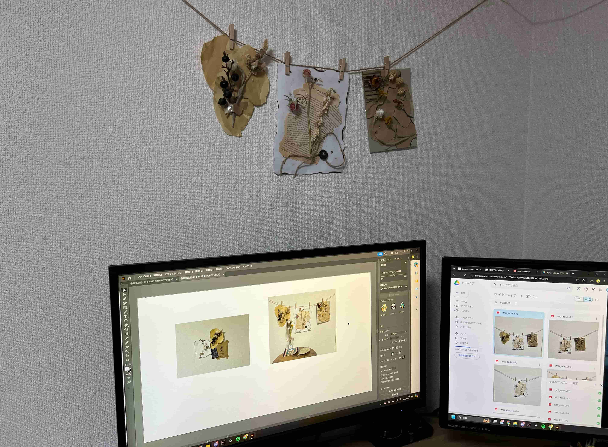
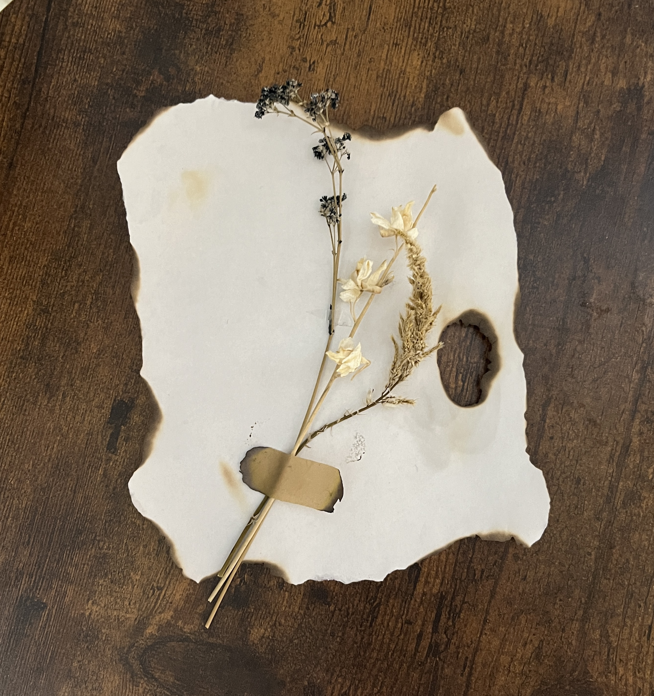
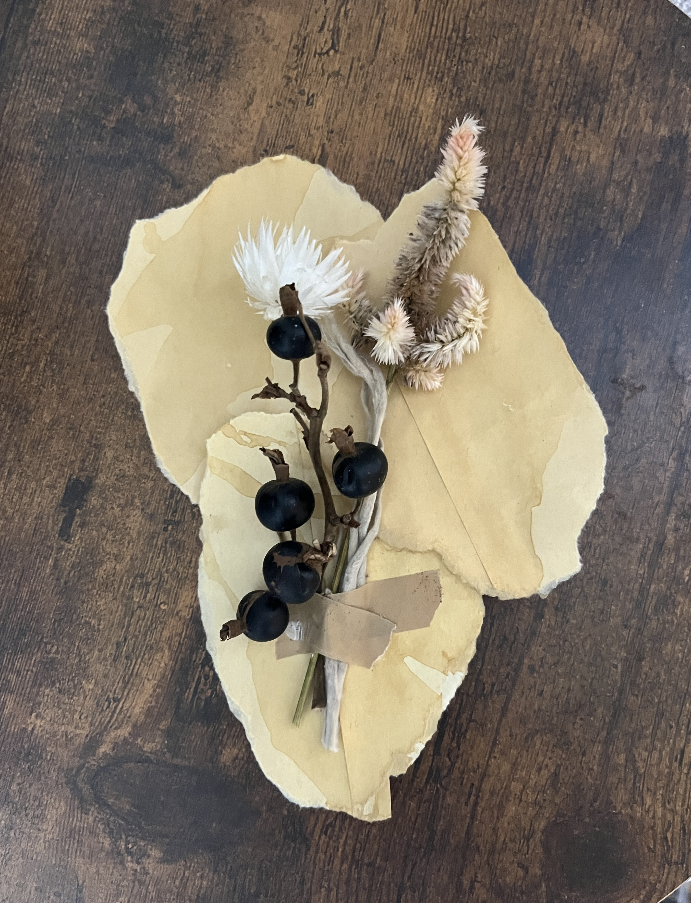
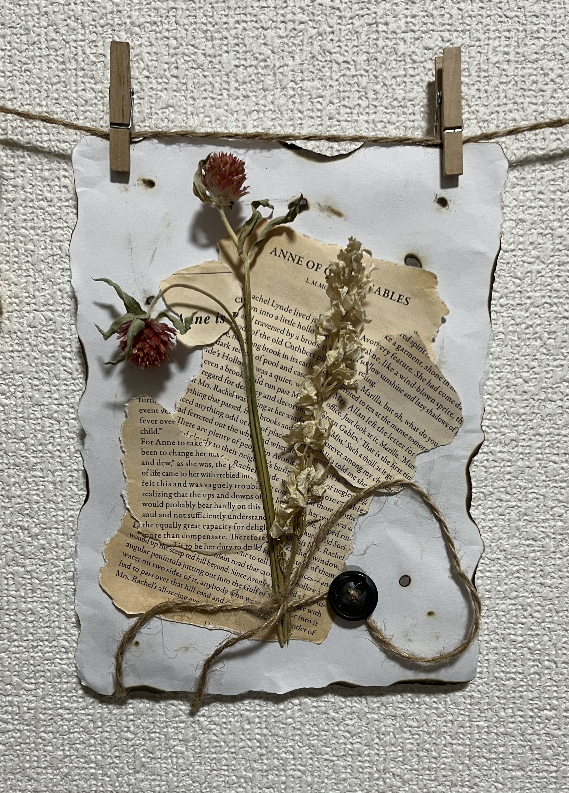
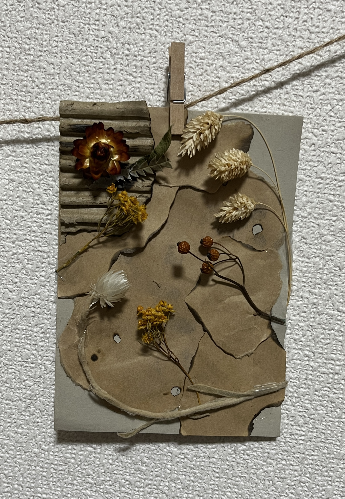
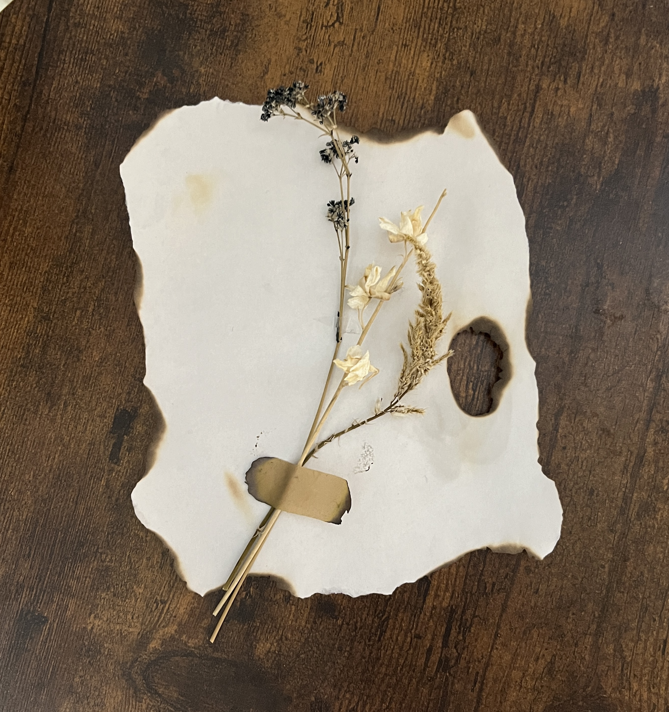
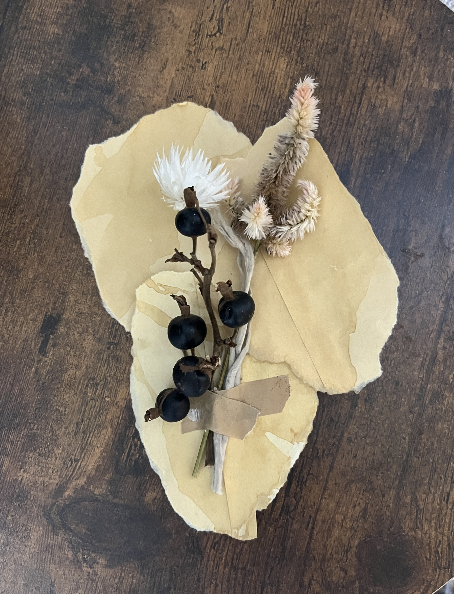
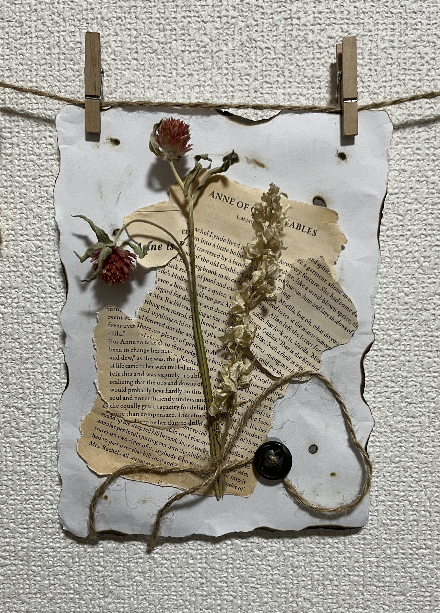
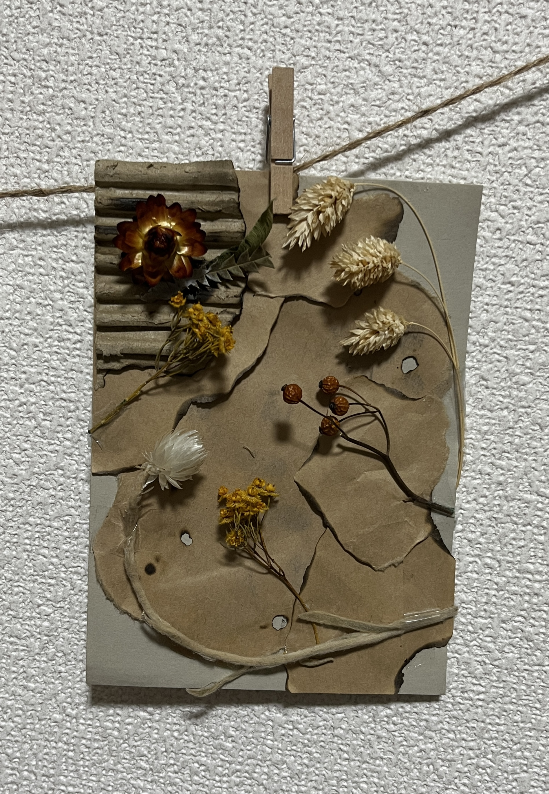

Foliage Plant
Foliage Plant
どのように空間に溶け込み効果を与えるか
About
植物が人間の心理や生活環境に与える影響を探ること を目的としている。
特に、ドライフラワーを中心とした 使用した作品が、人々の生活空間にどのような効果をも たらすのかを研究する。
空間の種類や用途に応じて、 どのような植物のデザインやスタイルが適しているのかについても調べる。
成功例
失敗例

植物を飾る際、複数の植物や関連アイテムを一緒に配置することで、空間に統一感と落ち着いた雰囲気を与えることができる。
一方、限られたスペースで植物を単独で配置すると、調和が取れず、バラバラな印象を与えてしまうため、全体のバランスを考慮した配置が重要であることがわかった。
Work

 







×